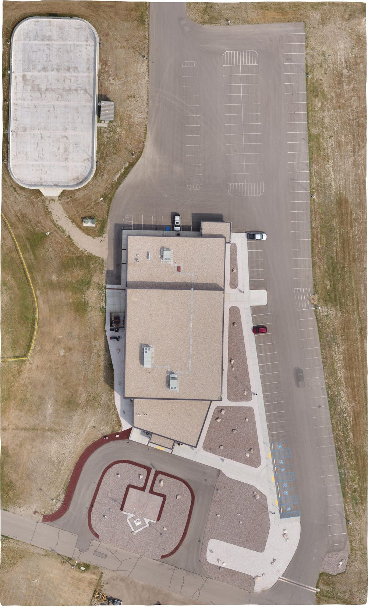

Tioga Community Hall Subproject Alignment
TIOGA-2026-05 · Delivered

Overview
A short methods report on registering separate camera blocks in PIX4Dmatic. Manual alignment with shared tie points (MTPs, GCPs, checkpoints) is still the right call for arbitrary coordinate systems, indoor reconstructions, low-overlap captures, and any deliverable that has to defend a specific accuracy claim. Automatic alignment via Adjust Input Cameras is faster and more consistent operator-to-operator when RTK or PPK geolocation is strong.
Processing
SoftwarePIX4Dmatic
Methods
- Comparison of shared-tie-point alignment vs Adjust Input Cameras
- Decision criteria for each method by project context
- References to Pix4D documentation on minimum tie-point counts
Deliverables
- Methods report
Key Technical Challenge
Articulating a defensible decision rule for when automatic alignment is and is not appropriate, given that automatic alignment can hide bundle-adjustment failures that manual tie points would surface.